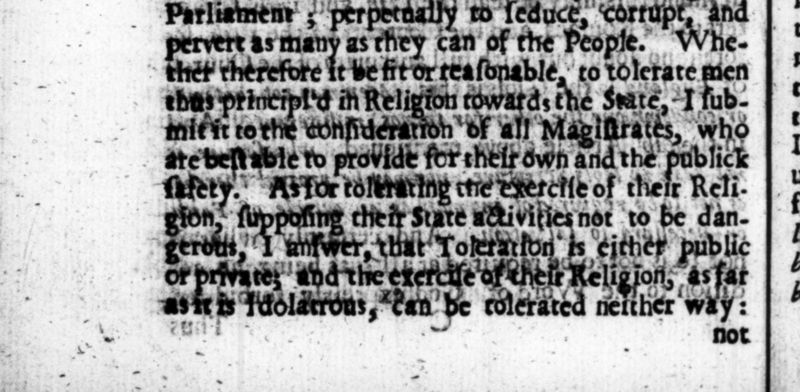
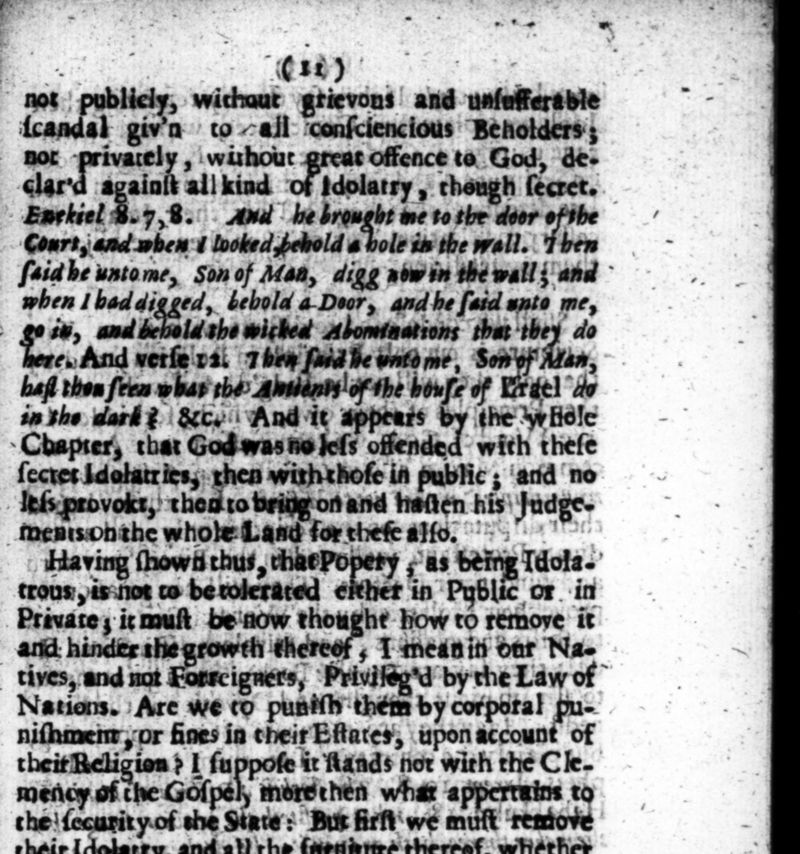

“Can be tolerated neither way” (pp. 10–11)
English: London 1673, pp. 10–11, scan n9–n10. Long s modernised; Milton’s spelling kept. Highlighted: Lecky’s quotation in note 92.


… Whether therefore it be fit or reasonable, to tolerate men thus principl’d in Religion towards the State, I submit it to the consideration of all Magistrates, who are best able to provide for their own and the publick safety. As for tolerating the exercise of their Religion, supposing their State activities not to be dangerous, I answer, that Toleration is either public or private; and the exercise of their Religion, as far as it is Idolatrous, can be tolerated neither way: [p. 11] not publicly, without grievous and unsufferable scandal giv’n to all conscientious Beholders; not privately, without great offence to God, declar’d against all kind of Idolatry, though secret. Ezekiel 8.7,8. And he brought me to the door of the Court, and when I looked, behold a hole in the wall. Then said he unto me, Son of Man, digg now in the wall; and when I had digged, behold a Door, and he said unto me, go in, and behold the wicked Abominations that they do here. And verse 12. Then said he unto me, Son of Man, hast thou seen what the Antients of the house of Israel do in the dark? &c. And it appears by the whole Chapter, that God was no less offended with these secret Idolatries, then with those in public; and no less provok’t, then to bring on and hasten his Judgements on the whole Land for these also.
Having shown thus, that Popery, as being Idolatrous, is not to be tolerated either in Public or in Private; it must be now thought how to remove it and hinder the growth thereof, I mean in our Natives, and not Foreigners, Privileg’d by the Law of Nations. Are we to punish them by corporal punishment, or fines in their Estates, upon account of their Religion? I suppose it stands not with the Clemency of the Gospel, more then what appertains to the security of the State: But first we must remove their Idolatry, and all the furniture thereof …
Lecky’s quotation (vol. II, ch. IV, note 92) is accurate in modern spelling, with “those secret idolatries” for Milton’s “these”. His comment, that Milton’s exclusion “rests upon a distinct religious principle” and not on the political danger, is exactly what the preceding sentence says.
Further down the rabbit hole
Sources that Lecky cites in the notes next to the ones that cite this page.
- Milton, AreopagiticaTruth torn to pieces like Osiris, and why the search must not be licensed
- Chillingworth, The Religion of ProtestantsWhy an honest error needs no pardon
- Harrington, A System of PoliticsA seventeenth-century republican predicts the fall of the French Church and Crown
- Taylor, A Discourse of the Liberty of ProphesyingLecky quotes Taylor accurately on water and Spirit
- Coleridge, Notes on English Divines“Most dearly do I love Jeremy Taylor”: Coleridge on a broken principle
- Aquinas, Summa theologiae, II-IIHeretics and forgers; the usurper’s subjects


Backlinks
Every place in Rationalism in Europe that links to this page (generated automatically when the site is built).